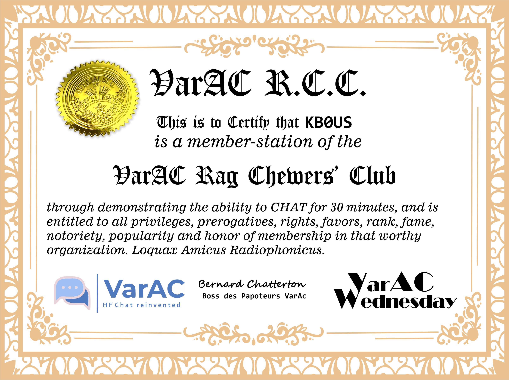

🎉 VarAC Rag Chewers’ Club 🏅
To seek admission into the illustrious VarAC Rag Chewers’ Club (henceforth referred to as the VarAC R.C.C.), kindly access your VarAC Statistics (Tools > Statistics) and meticulously complete the following distinguished form R.C.C. Award Application.
📶 Award Criteria
Should your QSO endure for a minimum of 30 minutes, you shall be bestowed with the coveted VarAC Rag Chewers’ Club certificate, suitable for printing on your personal printing apparatus or utilized in any manner you deem judicious. Should your submission reflect a QSO of at least 60 minutes, your certificate shall be adorned with the highly venerated One Hour Endorsement, a mark of true distinction. Pro Tip: For an air of unparalleled sophistication, consider employing fine ivory or delicate light blue printer paper to elevate the grandeur of your award.
📣 Share you prestigious award!
You are are henceforth encourged to post this estemed award to your QRZ.com page and your social media channels. When you share, be sure to include a link to this page, https://www.varacwednesday.net/rcc-award.html, and encourge your friends and fellow operators to join the hallowed halls of the VarAC R.C.C.
🛡 The Illustrious Origins of the VarAC R.C.C.
The VarAC R.C.C. pays homage to a venerable tradition initiated by the American Radio Relay League (ARRL), commencing in the 1950s, or perchance earlier, and concluding in 2004. This program, known as the Rag Chewers’ Club, was a delightfully droll certificate, conferred upon those who solemnly attested to engaging in a QSO of no less than 30 minutes. The certificate, often the first accolade earned by fledgling radio amateurs, was a cherished emblem of camaraderie. The charm of the original R.C.C. lay in its whimsical nature: there existed no actual club, and thus, its purported benefits were delightfully fictitious. The certificate bore the signature of “The Old Sock,” a playful nod to its tongue-in-cheek essence. Notably, the original R.C.C. certificate included a clause stating, “In accepting this certificate, the member agrees to abide by the published rules of the organization.” As there was no organization, and consequently no published rules, this line was a masterful stroke of irony, encapsulating the certificate’s status as a grand inside jest.
🔄 Adapting to Modern Sensibilities
Alas, the 1950s have long since faded, and the subtleties of such wry humor are oft lost on a contemporary global audience. To forestall any consternation among 21st-century amateur radio enthusiasts seeking the nonexistent “published rules,” the VarAC R.C.C. has, in its sagacity, omitted this line. Discretion, as ever, remains the better part of valor.
📜 Award example
 Mark, KB0US Jason, K3JSJ